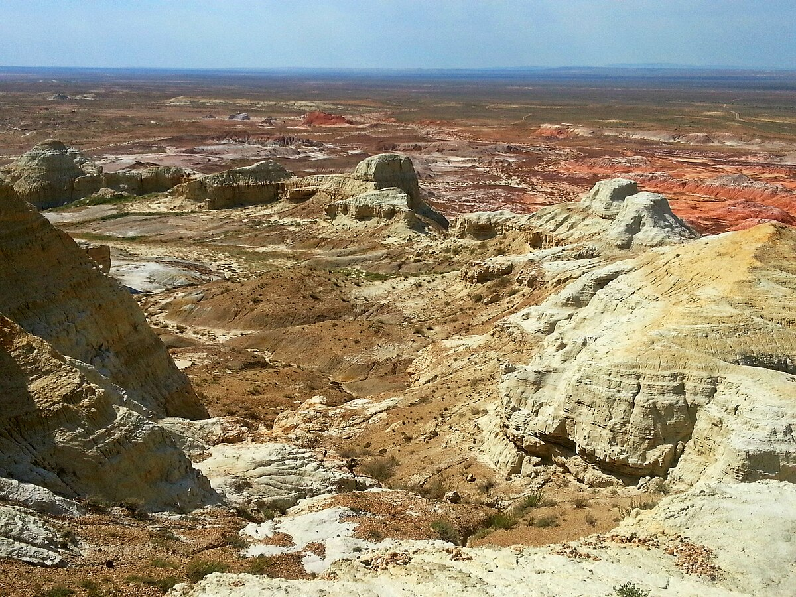

Қиын-Керіш шатқалы
Қызыл топырақты құлама жарлардан, өркештелген адырлардан, қызғылт сары, ақ, көк және басқада сан түрлі топырақты мұнаралардан тұратын ерекше шатқал. Аумағы 300 га. Шығыс Қазақстан облысындағы Қиын-Керіш шатқалы аудан орталығы Күршімнен 120 шақырым, ал облыс орталығы Өскемен қаласынан 300 шақырымдай қашықтықта орналасқан. Қиын-Керіш шатқалы – экологиялық, ғылыми, мәдени және эстетикалық тұрғыдан алғанда ерекше, орны толмайтын құнды табиғи кешендерді, сондай-ақ мемлекеттік табиғи-қорық қорының нысандары қатарына жатқызылған.